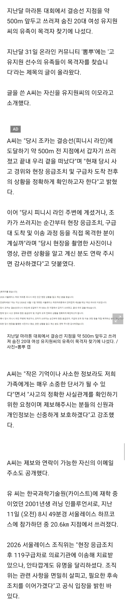
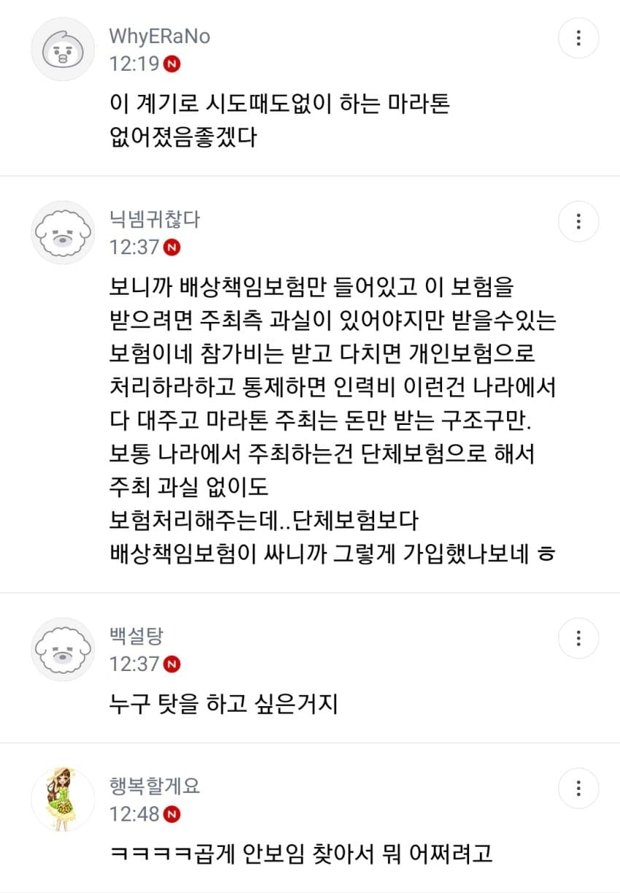

- 관련게시물 : 유지원 선수 서레 피니시 앞두고 심정지 ㄷㄷㄷ
- 관련게시물 : 기괴하다vs뭐 어때로 갈린다는 마라톤 추모.jpg


아주대 압수수색건도 있고 해서 여론은 안좋음
이번 기회에 마라톤 같은 큰 대회 안전 기준 제대로 짜게끔 만드는게 맞다란 의견도 있는데
일본같은 경우에는 가장많은 사고가 발생하는 마지막 10km 지점에 의료진 집중 배치한다고
- 관련게시물 : 유지원 선수 서레 피니시 앞두고 심정지 ㄷㄷㄷ
- 관련게시물 : 기괴하다vs뭐 어때로 갈린다는 마라톤 추모.jpg


댓글
댓글 보관 대기 중입니다. 원문 응답 오류가 있으면 다음 실행에서 다시 수집합니다.